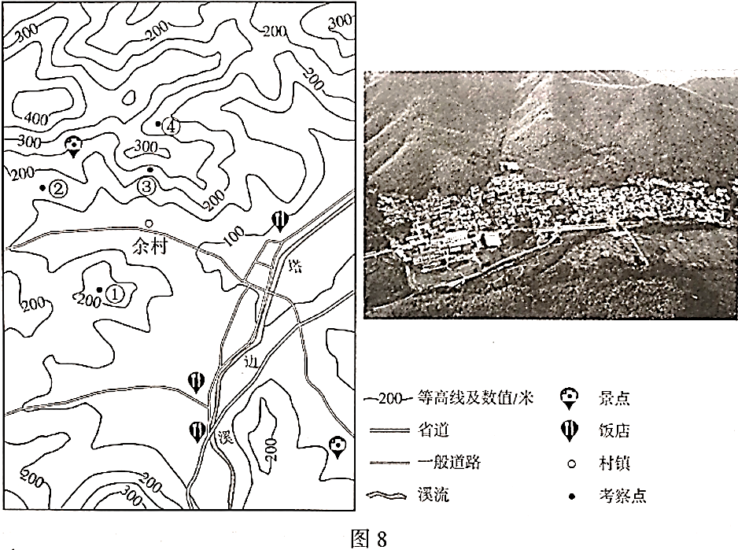

2020年北京市中考地理试题 · 选择题 第16、17、18、19、20题
国以农为本，民以食为天。自2018年起，我国将每年的秋分设为“中国农民丰收节”。图7为农业生产场景及中国四大地理区域图。读图，完成第14~16题。

16．设立“中国农民丰收节”可以
①增加农民生活幸福感②体现春播的生产环节
③改变农村的生产方式④强化农业的基础地位
A．①②B．①④C．②③D．③④
为了解浙江省安吉县昔日污染严重的余村，转变为绿水青山美丽乡村的过程，某校师生开展了研学考察。图8为余村及周边等高线地形图和景观图。读图，完成第17~19题。

17．图中
A．①地海拔约300米B．②地比③地海拔低、坡度更缓
C．③地位于山脊、坡度陡D．④地位于山谷，可见余村全貌
18．余村在践行“绿水青山就是金山银山”理论的过程中，合理的做法是
A．村北山区开辟采石场B．村东南兴建水泥厂
C．村西北发展生态旅游D．鼓励村民外出务工
19．与杭州相比，余村
A．规模较大，高楼林立B．公路纵横，车流不息
C．港口众多，商贸发达D．农田片片，竹林满山
沈括在《梦溪笔谈》中有以下记载：“诸越（泛指两广地区）则桃李冬实，朔漠（泛指西北地区）则桃李夏荣，此地气之不同也。一亩之稼，则粪溉者先芽；一丘之禾，则后种者晚实，此人力之不同也。岂可一切拘于定月哉？”据此，完成第20、21题。
20．这段文字表明
A．同种作物，各地同时收获B．不同地域，收获季节不同
C．增施水肥，改变作物种类D．适当晚播，提前收获作物